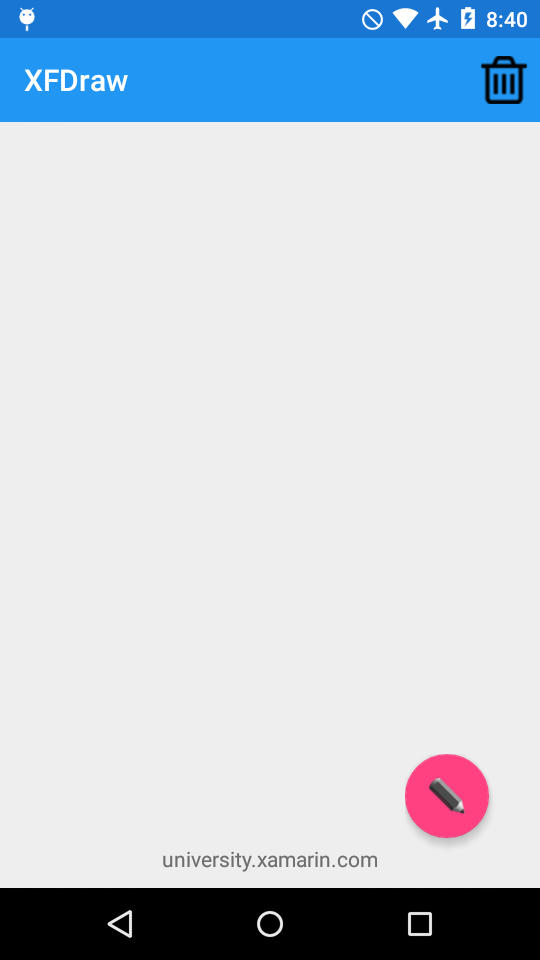

Duration
15 minutes
Goals
The primary goal of this lab is to embed a native control into Xamarin.Forms layout. Specifically, we'll add an Android Floating Action Button to a Xamarin.Forms grid. You'll start with an existing Xamarin.Forms solution with a minimal interface with no behavior defined in a shared project. We're going to use this project to create a Xamarin.Forms sketch app. You'll modify the code to replace a toolbar button with a native control when running on Android.
Required assets
The provided Part 01 Resources folder contains a starter solution in the Start subfolder. There is also a Completed folder with a solution you can use to check your work. Please make sure you have these folders before you begin.
Challenge
- Open the project in the Start folder and examine the code in the XFDraw shared project.
- Open MainPage.xaml.cs in the shared project.
- Using an Android preprocessor directive, add Android-specific using statements to bring in the namespaces required to add an Android floating action button: Xamarin.Forms.Platform.Android and Android.Support.Design.Widget.
- In the constructor, use preprocessor directives to isolate the code that creates the New Color
ToolbarItemto execute on any platform except Android. - On Android only, create a
FloatingActionButton. - Use the
ToViewextension method on the floating action button and add the returnedViewto theGridmainLayout. - Run the application on Android and one other platform.
Steps
Create a platform specific control
In order to use the Android-specific UI, we need to assemble a few things first.
- Open the project in the Start folder.
- Open MainPage.xaml.cs in the XFDraw shared project.
- Add the Android specific using statements for Android widgets:
Android.Support.Design.WidgetAndroid.Widget
- Add the Xamarin.Forms Android platform using statement to gain access to the native embedding using statements:
Xamarin.Forms.Platform.Android. - Surround the new using statements with an Android platform preprocessor directive to ensure they're only compiled by the Android head-project.
- In the constructor, find the code to create the "New Color"
ToolbarItem. - Add an Android preprocessor directive with a matching else statement so the "New Color" button is created on every platform except Android.
- For Android only, create a new
FloatingActionButton. - Set the image resource to the included pencil image. You may need to fully qualify the namespace:
XFDraw.Droid.Resource.Drawable.pencil. - Handle the button's
Clickevent handler and call the providedOnColorClickedmethod. - Create an Android Frame Layout to hold the button. You will need to call
SetPaddingwith large enough values to contain the button's drop-shadow thenSetClipToPaddingshould be set tofalseto ensure the drop-shadow is visible.
Embed the native control
With our Android FloatingActionButton ready and wrapped in a FrameLayout large enough to display it entirely, we put it in our main Forms Grid layout.
- Call the
ToViewextension method on theFrameLayoutinstance and save it to a local variable. - We'll place the button in the lower left corner of the grid: set both the
HorizontalOptionsandVerticalOptionstoLayoutOptions.End. - Add the view to mainLayout's
Childrencollection. - Run the application on Android and one other platform.
Summary
In this exercise, you created a platform-specific native control and embedded it into a Xamarin.Forms layout.